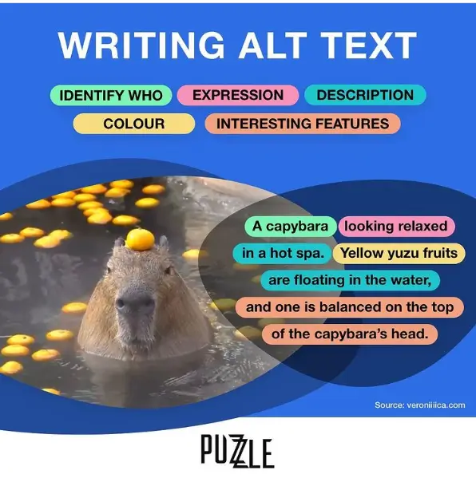
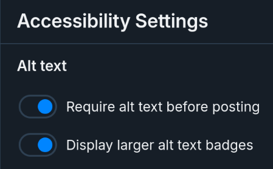

Out of 0 observed images, 0 are missing alt text.
0% are missing alt text
Alt text (alternative text) is crucial for web accessibility and inclusivity. It provides a textual description
of images for users who rely on screen readers, have slow internet connections, or when images fail to load.
By adding meaningful alt text to your images, you create a more inclusive and
user-friendly experience for all visitors to your Bluesky posts.
Alt text also helps to increase the reach and audience of your image posts, the content of the alt text is used as
part of the information that is used to recommend content to users.
Some labellers will even remove your posts from their feeds if they don't have alt text! Additionally some users
will refuse to share your content if it's missing alt text!
Please refer to this guide from Perkins.org, or this helpful infographic:
There is an option you can enable in the Bluesky settings that will require you to write alt text for any image you upload, that way you never forget! You can find it under Settings > Accessibility.
